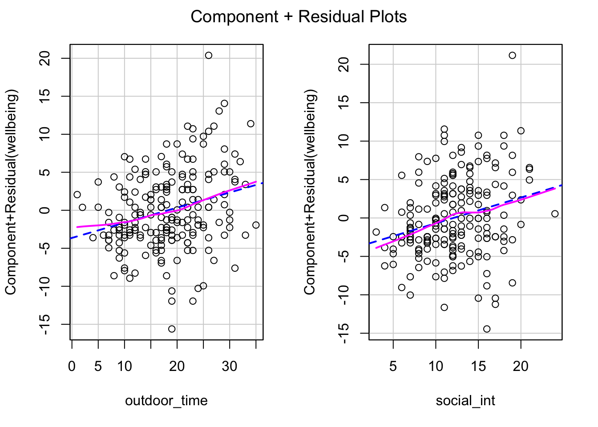
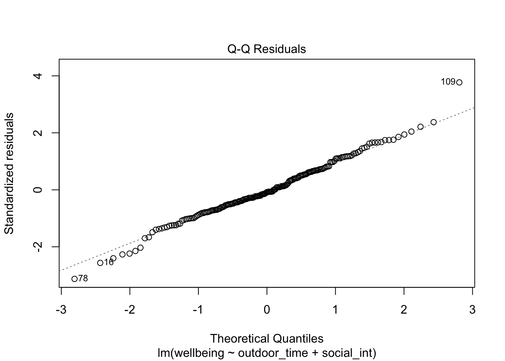
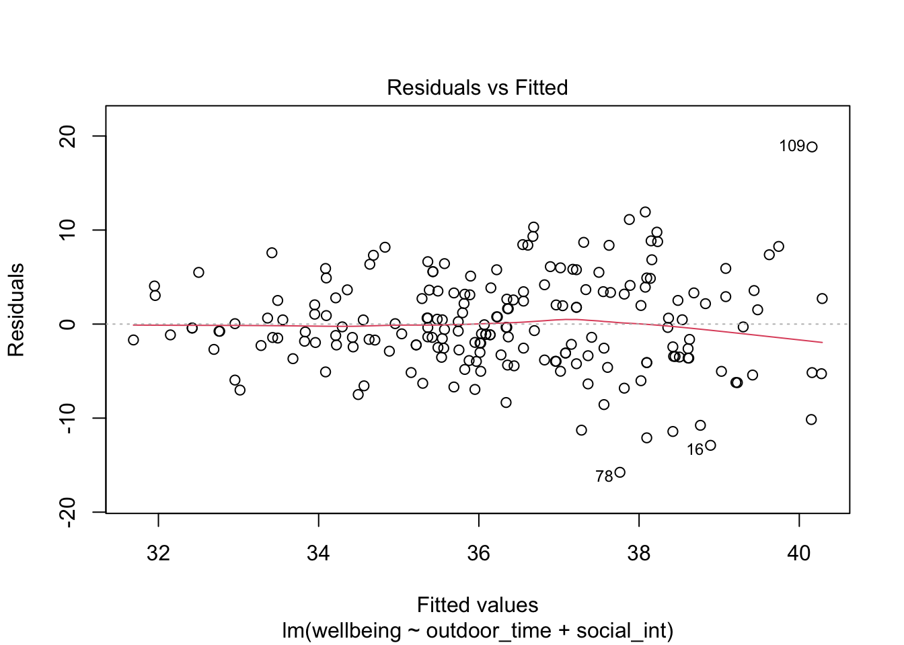
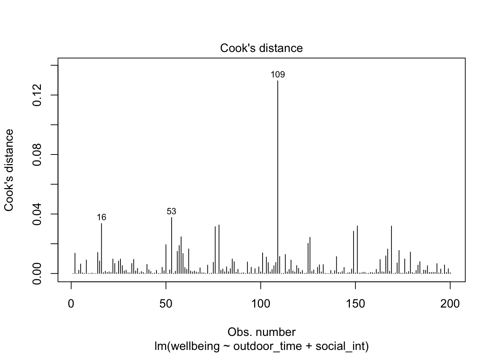

| variable | description |
|---|---|
| age | Age in years of respondent |
| outdoor_time | Self report estimated number of hours per week spent outdoors |
| social_int | Self report estimated number of social interactions per week (both online and in-person) |
| routine | Binary 1=Yes/0=No response to the question 'Do you follow a daily routine throughout the week?' |
| wellbeing | Warwick-Edinburgh Mental Wellbeing Scale (WEMWBS), a self-report measure of mental health and wellbeing. The scale is scored by summing responses to each item, with items answered on a 1 to 5 Likert scale. The minimum scale score is 14 and the maximum is 70 |
| location | Location of primary residence (City, Suburb, Rural) |
| steps_k | Average weekly number of steps in thousands (as given by activity tracker if available) |
08: Assumptions and diagnostics
This week, you’ll practice checking assumptions and running diagnostics of multicollinearity and influence for a multiple regression model you developed back in Block 1.
NoteGet set up
- Open RStudio.
- Create a new .Rmd file for this week’s exercises.
- Save it somewhere you can find it again.
- Give it a clear name (for example,
dapr2_lab08.Rmd). - In the first code chunk, load the packages you’ll need this week (and install them if you don’t have them already):
tidyversecar
Research question (RQ): Is there an association between wellbeing and time spent outdoors, when controlling for the effect that social interaction has on wellbeing?
Data dictionary:
NoteMore detail about this dataset
From the Edinburgh & Lothians, 100 city/suburb residences and 100 rural residences were chosen at random and contacted to participate in the study. The Warwick-Edinburgh Mental Wellbeing Scale (WEMWBS) was used to measure mental health and wellbeing.
Participants filled out a questionnaire including items concerning: estimated average number of hours spent outdoors each week, estimated average number of social interactions each week (whether on-line or in-person), whether a daily routine is followed (yes/no). For those respondents who had an activity tracker app or smart watch, they were asked to provide their average weekly number of steps.
Set up data and model
Question 1
Read in the data from https://uoepsy.github.io/data/wellbeing_rural.csv and store it in a variable named mwdata (“mw” stands for “mental wellbeing”).
Use the function lm() to fit the linear model represented by the mathematical model formulation below, and name the result m1.
\[ \text{wellbeing} = \beta_0 + (\beta_1 \cdot \text{outdoor\_time}) + (\beta_2 \cdot \text{social\_int}) + \epsilon \]
mwdata <- read_csv("https://uoepsy.github.io/data/wellbeing_rural.csv")
m1 <- lm(wellbeing ~ outdoor_time + social_int, data = mwdata)
Check assumptions
Question 2
Do the associations between each predictor and the outcome appear sufficiently linear to justify using a linear model for this data?
🗂️ See TODO flash cards.
Assess visually using component-residual plots.
crPlots(m1)
We want the wobbly pink line to match the dashed blue line. I think the match is pretty good! Associations look sufficiently linear.
Question 3
Are the errors of m1 independent?
🗂️ See TODO flash cards.
As long as each observation comes from a different source—for example, as long as we don’t have multiple observations from the same person—we can safely assume that errors are independent.
Let’s double-check this in the data:
mwdata |> head()# A tibble: 6 × 7
age outdoor_time social_int routine wellbeing location steps_k
<dbl> <dbl> <dbl> <dbl> <dbl> <chr> <dbl>
1 28 12 13 1 36 rural 21.6
2 56 5 15 1 41 rural 12.3
3 25 19 11 1 35 rural 49.8
4 60 25 15 0 35 rural NA
5 19 9 18 1 32 rural 48.1
6 34 18 13 1 34 rural 67.3A clear give-away would be a column like participant_id with IDs that appear only once each. But we can still tell that we have one observation per person because every row has a different value of age.
So we can assume here that errors are independent because each observation comes from a different source.
Question 4
Are the errors of m1 sufficiently normally distributed?
🗂️ See TODO flash cards.
Assess visually using a Q-Q plot.
plot(m1, which = 2)
The match to the diagonal is pretty good, except for that one observation in row 109 (top right) that’s pretty far off the diagonal. But it’s just one data point, which could be random chance, so I’d tend to say that the errors are sufficiently normally distributed.
Question 5
Do the errors of m1 have sufficiently equal variance across the whole range of fitted values?
🗂️ See TODO flash cards.
Assess visually using a residuals-vs-fitted plot.
plot(m1, which = 1)
We’re looking for an even vertical spread of residuals across the whole x axis. That’s not what we see here! The residuals are not a uniform cloud, but have a fan/funnel kind of shape. Specifically, the vertical spread of the residuals is a lot smaller for fitted values around 32 and 34, and a lot bigger around 38 and 40. So the the errors of this model do not have equal variance.
A pattern like this should suggest to you that we should bootstrap this model before interpreting its estimates; bootstrapping will be covered in lab/lecture 09.
Check multicollinearity
Question 6
Do you think multicollinearity between predictors is a problem for m1?
🗂️ See TODO flash cards.
Measure multicollinearity using VIF (variance inflation factor).
vif(m1)outdoor_time social_int
1.001306 1.001306 We want values below 5, and the closer to 1, the better. Because these values are very close to 1, I would conclude that multicollinearity between predictors is not inflating the model’s variance estimates.
Check influence
Question 7
One particular observations influences the model’s estimates more than others. What row is that observation in?
🗂️ See TODO flash cards.
Measure influence using Cook’s Distance.
plot(m1, which = 4)
It’s observation 109 again!
(If you look back, observation 109 appears in both the Q-Q plot and the residuals-vs-fitted plot as a data point behaving strangely!)
Run sensitivity analysis
Question 8
Fit the same model from Q1 to a version of the dataset that does not include the high-influence data point. Call that model m2.
🗂️ See TODO flash cards.
m2 <- lm(
wellbeing ~ outdoor_time + social_int,
data = mwdata[-109,] # "subtract" row 109
)
Question 9
Compare the model summaries for m1 and m2.
- How much do the coefficient estimates change after the high-influence data point has been removed?
- How much does the pattern of statistical significance change?
🗂️ See TODO flash cards.
summary(m1)
Call:
lm(formula = wellbeing ~ outdoor_time + social_int, data = mwdata)
Residuals:
Min 1Q Median 3Q Max
-15.7611 -3.1308 -0.4213 3.3126 18.8406
Coefficients:
Estimate Std. Error t value Pr(>|t|)
(Intercept) 28.62018 1.48786 19.236 < 2e-16 ***
outdoor_time 0.19909 0.05060 3.935 0.000115 ***
social_int 0.33488 0.08929 3.751 0.000232 ***
---
Signif. codes: 0 '***' 0.001 '**' 0.01 '*' 0.05 '.' 0.1 ' ' 1
Residual standard error: 5.065 on 197 degrees of freedom
Multiple R-squared: 0.1265, Adjusted R-squared: 0.1176
F-statistic: 14.26 on 2 and 197 DF, p-value: 1.644e-06summary(m2)
Call:
lm(formula = wellbeing ~ outdoor_time + social_int, data = mwdata[-109,
])
Residuals:
Min 1Q Median 3Q Max
-15.4846 -2.9893 -0.5336 3.3721 12.1436
Coefficients:
Estimate Std. Error t value Pr(>|t|)
(Intercept) 29.32685 1.44818 20.251 < 2e-16 ***
outdoor_time 0.18328 0.04903 3.738 0.000243 ***
social_int 0.29222 0.08691 3.362 0.000930 ***
---
Signif. codes: 0 '***' 0.001 '**' 0.01 '*' 0.05 '.' 0.1 ' ' 1
Residual standard error: 4.891 on 196 degrees of freedom
Multiple R-squared: 0.1098, Adjusted R-squared: 0.1007
F-statistic: 12.09 on 2 and 196 DF, p-value: 1.124e-05The coefficient estimates change a little bit, but the sign stays the same (i.e., if an estimate was positive in m1, it’s still positive in m2). And the pattern of significance doesn’t change at all: all coefs are still significant at \(p\) < .001.
Question 10
Does the high-influence observation impact the conclusions you would draw from the model?
🗂️ See TODO flash cards.
No. Even though observation 109 has a Cook’s distance that’s much greater than any of its fellows, it does not have much practical impact on our conclusions. When it’s excluded, the signs of the coefficients and the pattern of significance do not change. We can therefore conclude that observation 109 is not driving the effects we observe in the model.